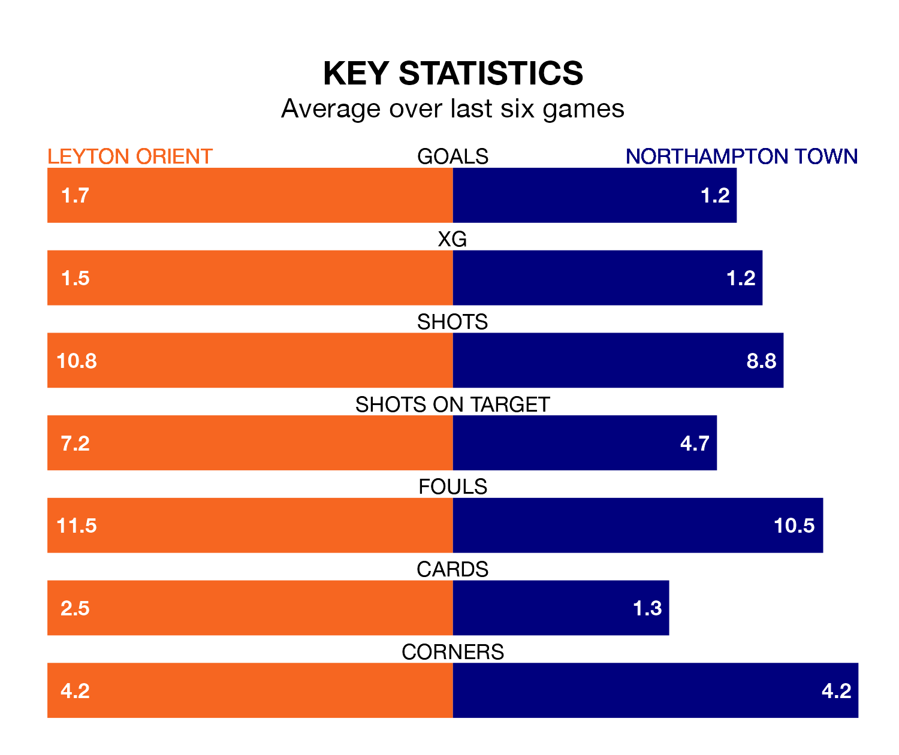

Leyton Orient host Northampton Town on Tuesday at Brisbane Road in EFL League One.
In their last league match, on Saturday, Orient lost to Barnsley 2-1 away, with their goal scored by Ruel Sotiriou.
Northampton drew, 1-1 at home against Bolton Wanderers, with Kieron Bowie scoring their goals.
In the last 10 years, Orient and Northampton have played each other on 10 occasions. Orient won two of them, Northampton four, and they drew four times.
On average, Orient scored 0.9 goals and the Cobblers 1.4 in those matches.
Their last meeting was on October 24, when they played out a 2-2 draw.
With 35 goals in 31 games so far this season, Orient are scoring at below the league average rate with 1.1 goals per game. But they are conceding fewer than average too, letting in 36 goals at a rate of 1.2 per game.
Northampton are also below average scorers, with 1.2 goals per game, compared to a league average of 1.3. They have conceded 1.4 goals per game.
The hosts are in good form in EFL League One, with four wins and a draw from their last six games.
With two wins and two draws over that period, Town's form is worse – they have taken eight points from 18, compared to Orient's 13.
In Sam Hoskins, the Cobblers have one of the league's sharpest shooters so far this season. He has notched 14 goals in 27 appearances, to sit sixth in the scoring charts.
Orient's top scorers, with eight goals each, are Shaqai Forde and Sotiriou.
The home side are 10th in the table after 31 games, of which they have won 12 and drawn nine, earning 45 points.
The away team are two places behind Orient in 12th, with 12 wins and five draws putting them on 41 points.
Updated: 13:30 (UTC), 12/02/24